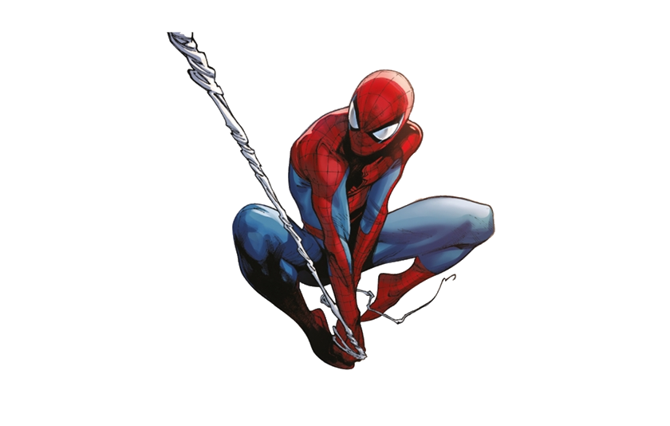

<ion-content>
  <ion-toolbar color="rgba(0, 0, 0, 0.000)"
  style="background-image: linear-gradient(to bottom, #00050d, #00112e, #00184e, #00176b, #320081);">
  <ion-title>
    <b style="color: white;">TOP3</b>
    <ion-button color="dark" size="small" class="ion-float-right" [routerLink]="['/home']">
      <!-- (click)="onlogout()" -->
      atras</ion-button>
  </ion-title>
</ion-toolbar>
<app-tablajugadores></app-tablajugadores>


</ion-content>